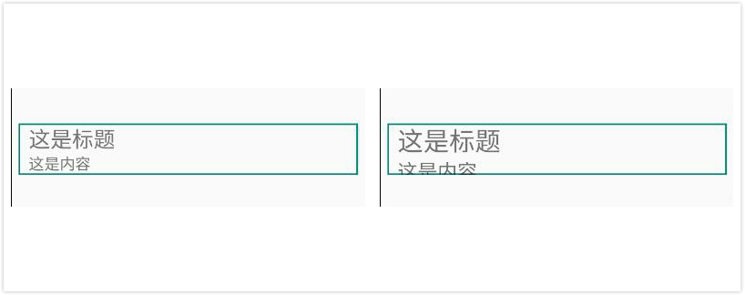
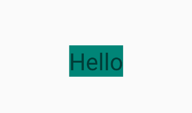
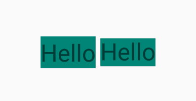
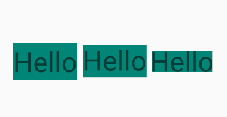

本篇文章已授权微信公众号 guolin_blog（郭霖）独家发布
前言
虽然去年写的一篇文章【一种非常好用的Android屏幕适配】就包含字体大小适配，但那篇文章讲的是根据不同屏幕尺寸来适配字体大小的，接下来我要聊的是字体大小适配中的其他几种场景。
一、场景一
有这样一个需求，界面上需要显示一个标题文本，但是该标题的文案长度是不固定的，要求标题的文案全部显示出来，不能用省略号显示，并且标题所占的宽高是固定的。例如标题的文案为 “这是标题，该标题的名字比较长，产品要求不换行全部显示出来”，如下图所示，第一个为不符合需求的标题，第二个为符合需求的标题。
也就是说TextView控件的宽高需要固定，然后根据标题的文案长度动态改变字体大小，也就是上图第二个标题的效果。那是怎么实现的呢？
以前的做法一般是测量TextView文本所占的宽度与TextView控件的宽度对比，动态改变TextView的字体大小，写起来即麻烦又耗性能。但是现在不用这么麻烦了，Android 8.0 新增了用来动态改变TextView字体大小的新特性 Autosizing TextViews，只需要简单设置一下属性即可。
例如上图中符合需求的效果可以这样写：
1.1 xml 方式
<?xml version="1.0" encoding="utf-8"?>
<LinearLayout
xmlns:android="http://schemas.android.com/apk/res/android"
android:layout_width="match_parent"
android:layout_height="match_parent"
android:gravity="center">
<TextView
android:layout_width="340dp"
android:layout_height="50dp"
android:background="@drawable/shape_bg_008577"
android:gravity="center_vertical"
android:maxLines="1"
android:text="这是标题，该标题的名字比较长，产品要求不换行全部显示出来"
android:textSize="18sp"
android:autoSizeTextType="uniform"
android:autoSizeMaxTextSize="18sp"
android:autoSizeMinTextSize="10sp"
android:autoSizeStepGranularity="1sp"/>
</LinearLayout>可以看到TextView控件多了如下属性：
- autoSizeTextType：设置TextView是否支持自动改变字体大小，none表示不支持，uniform表示支持。
- autoSizeMinTextSize：最小字体大小，例如设置为10sp，表示文字最多只能缩小到10sp。
- autoSizeMaxTextSize：最大字体大小，例如设置为18sp，表示文字最多只能放大到18sp。
- autoSizeStepGranularity：缩放粒度，即每次字体大小变化的数值，例如设置为1sp，表示每次缩小或放大的值为1sp。
上面的只是针对于8.0的设备有效，如果想要兼容8.0以下设备，则需要用AppCompatTextView代替TextView，并且上面几个属性的命名空间需要用app命名空间。如下：
<?xml version="1.0" encoding="utf-8"?>
<LinearLayout
xmlns:android="http://schemas.android.com/apk/res/android"
android:layout_width="match_parent"
android:layout_height="match_parent"
xmlns:app="http://schemas.android.com/apk/res-auto"
android:gravity="center">
<android.support.v7.widget.AppCompatTextView
android:layout_width="340dp"
android:layout_height="50dp"
android:background="@drawable/shape_bg_008577"
android:gravity="center_vertical"
android:maxLines="1"
android:text="这是标题，该标题的名字比较长，产品要求不换行全部显示出来"
android:textSize="18sp"
app:autoSizeTextType="uniform"
app:autoSizeMaxTextSize="18sp"
app:autoSizeMinTextSize="10sp"
app:autoSizeStepGranularity="1sp"/>
</LinearLayout>肯定很多人说 “为什么自己写的时候不用AppCompatTextView也能兼容8.0以下设备呢？”，那是因为你当前的xml文件对应的Activity继承的是AppCompatActivity，如果继承的是Activity或FragmentActivity是不能达到兼容的。这一点其实官方文档 Autosizing TextViews 也没有说清楚，导致很多人误解了，各位可以自己验证下。
1.2 动态编码方式
使用 TextViewCompat 的setAutoSizeTextTypeWithDefaults()方法设置TextView是否支持自动改变字体大小，setAutoSizeTextTypeUniformWithConfiguration()方法设置最小字体大小、最大字体大小与缩放粒度。如下所示：
TextView tvText = findViewById(R.id.tv_text);
TextViewCompat.setAutoSizeTextTypeWithDefaults(tvText,TextViewCompat.AUTO_SIZE_TEXT_TYPE_UNIFORM);
TextViewCompat.setAutoSizeTextTypeUniformWithConfiguration(tvText,10,18,1, TypedValue.COMPLEX_UNIT_SP);- setAutoSizeTextTypeWithDefaults()
参数1为需要动态改变字体大小的TextView，参数2为是否支持自动改变字体大小的类型，AUTO_SIZE_TEXT_TYPE_UNIFORM表示支持，AUTO_SIZE_TEXT_TYPE_NONE表示不支持。 - setAutoSizeTextTypeUniformWithConfiguration()
参数1为需要动态改变字体大小的TextView，参数2、3、4分别为最小字体大小、最大字体大小与缩放粒度，参数5为参数2、3、4的单位，例如sp 、dp、px等。
同样，如果要兼容8.0以下设备，要么在xml中用AppCompatTextView代替TextView，要么当前Activity继承AppCompatActivity。
1.3 小结
Autosizing TextViews是Android 8.0 新增的特性，可以用来动态改变TextView字体大小。如果要兼容8.0以下设备，则需要满足以下2个条件中的其中一个。
- 在xml中用AppCompatTextView代替TextView，并且上面几个属性的命名空间用app命名空间。
- 当前Activity继承AppCompatActivity，而不是Activity或FragmentActivity。
Autosizing TextViews更多属性请参考 Autosizing TextViews
二、场景二
很多人肯定遇到过这种情况，测试扔个图片过来，然后说怎么运行在这个测试机后下面的内容都挡住了（如下右图，左图为正常情况），你不是说做了屏幕适配的吗？然后你拿测试的手机一看，设置里面竟然选了 特大 字体。

嗯… 经过这么一看基本就知道什么问题了。原因是你在xml文件写死了控件的高度，并且TextView的字体单位用的是sp，这种情况下到手机设置中改变字体大小，那么界面中的字体大小就会随系统改变。
那么我们应该怎么解决这个问题呢？这时候我们可以观察下微信的做法，经过研究发现微信的字体是不会随着系统字体大小的改变而改变的，并且微信本身是有改变字体大小功能的。微信中改变字体大小后不仅字体大小改变了，控件的宽高也会跟着改变。所以可以猜到微信的字体适配是如下方式实现的：
2.1 字体大小不随系统改变
想要实现字体大小不随系统改变有两种方式：
1. xml方式
TextView的字体单位不使用sp，而是用dp。因为sp单位的字体大小会随系统字体大小的改变而改变，而dp单位则不会。
2. 动态编码方式
字体大小是否随系统改变可以通过Configuration类的fontScale变量来控制，fontScale变量默认为1，表示字体大小不随系统字体大小的改变而改变，那么我们只需要保证fontScale始终为1即可。具体代码如下，一般放在Activity的基类BaseActivity即可。
@Override
public void onConfigurationChanged(Configuration newConfig) {
super.onConfigurationChanged(newConfig);
if (newConfig.fontScale != 1) { //fontScale不为1，需要强制设置为1
getResources();
}
}
@Override
public Resources getResources() {
Resources resources = super.getResources();
if (resources.getConfiguration().fontScale != 1) { //fontScale不为1，需要强制设置为1
Configuration newConfig = new Configuration();
newConfig.setToDefaults();//设置成默认值，即fontScale为1
resources.updateConfiguration(newConfig, resources.getDisplayMetrics());
}
return resources;
}虽然两种方式都可以解决场景二的问题，但是一般都是使用动态编码方式，原因如下：
- 若应用需要增加类似微信可以改变字体大小的功能，如果在xml中用的是dp单位，那么该功能将无法实现！
- 若需求改成字体大小需要随系统字体大小的改变而改变，只需要删掉该段代码即可。
- 官方推荐使用sp作为字体单位。
2.2 控件宽高尽量不要固定
原因是如果应用需要增加类似微信可以改变字体大小的功能，如果控件宽高固定的话，调大字体会导致控件显示不下，这不是我们需要的效果。
三、场景三
有这样一种情况，当你按照设计图的标注去写一个TextView控件的时候，宽高用的是wrap_content，也没有设置任何padding，但是运行在手机上该TextView所占的宽高却比设计图的要大。如下图所示，字体周围多了很多空白部分。

这是因为TextView本身就含有内边距造成的，那么TextView有没有属性可以去除内边距呢？答案是有的，该属性为 includeFontPadding，设置为false表示不包含字体内边距，具体代码如下：
<TextView
android:layout_width="wrap_content"
android:layout_height="wrap_content"
android:background="@color/colorPrimary"
android:text="Hello"
android:textSize="50sp"
android:includeFontPadding="false"/>运行效果如下图中的第二个“Hello”（第一个“Hello”为普通TextView），看起来好像是可以的，但是仔细看发现还是留有一点内边距的。

一般的应用可能不在乎那点内边距，但如果做的是TV上的应用就要求比较严格了，因为TV界面一般是不支持上下左右滚动的，如果设计图上的内容刚好占满屏幕，那么这些内边距就会导致个别控件显示不全。所以在这种情况下是必须要解决的，既然TextView自带属性不能解决，那就只能自定义了。具体代码如下：
import android.content.Context;
import android.content.res.TypedArray;
import android.graphics.Canvas;
import android.graphics.Paint;
import android.graphics.Rect;
import android.support.v7.widget.AppCompatTextView;
import android.util.AttributeSet;
public class NoPaddingTextView extends AppCompatTextView {
private Paint mPaint = getPaint();
private Rect mBounds = new Rect();
private Boolean mRemoveFontPadding = false;//是否去除字体内边距，true：去除 false：不去除
public NoPaddingTextView(Context context) {
super(context);
}
public NoPaddingTextView(Context context, AttributeSet attrs) {
super(context, attrs);
initAttributes(context, attrs);
}
public NoPaddingTextView(Context context, AttributeSet attrs, int defStyleAttr) {
super(context, attrs, defStyleAttr);
initAttributes(context, attrs);
}
protected void onMeasure(int widthMeasureSpec, int heightMeasureSpec) {
super.onMeasure(widthMeasureSpec, heightMeasureSpec);
if (mRemoveFontPadding) {
calculateTextParams();
setMeasuredDimension(mBounds.right - mBounds.left, -mBounds.top + mBounds.bottom);
}
}
protected void onSizeChanged(int w, int h, int oldw, int oldh) {
super.onSizeChanged(w, h, oldw, oldh);
}
protected void onDraw(Canvas canvas) {
drawText(canvas);
}
/**
* 初始化属性
*/
private void initAttributes(Context context, AttributeSet attrs) {
TypedArray typedArray = context.obtainStyledAttributes(attrs, R.styleable.NoPaddingTextView);
mRemoveFontPadding = typedArray.getBoolean(R.styleable.NoPaddingTextView_removeDefaultPadding, false);
typedArray.recycle();
}
/**
* 计算文本参数
*/
private String calculateTextParams() {
String text = getText().toString();
int textLength = text.length();
mPaint.getTextBounds(text, 0, textLength, mBounds);
if (textLength == 0) {
mBounds.right = mBounds.left;
}
return text;
}
/**
* 绘制文本
*/
private void drawText(Canvas canvas) {
String text = calculateTextParams();
int left = mBounds.left;
int bottom = mBounds.bottom;
mBounds.offset(-mBounds.left, -mBounds.top);
mPaint.setAntiAlias(true);
mPaint.setColor(getCurrentTextColor());
canvas.drawText(text, (float) (-left), (float) (mBounds.bottom - bottom), mPaint);
}
}将NoPaddingTextView需要的属性定义在attr.xml文件中，如下：
<?xml version="1.0" encoding="utf-8"?>
<resources>
<declare-styleable name="NoPaddingTextView">
<attr name="removeDefaultPadding" format="boolean"/>
</declare-styleable>
</resources>布局文件中使用，如下：
<?xml version="1.0" encoding="utf-8"?>
<LinearLayout
xmlns:android="http://schemas.android.com/apk/res/android"
xmlns:app="http://schemas.android.com/apk/res-auto"
android:layout_width="match_parent"
android:layout_height="match_parent"
android:gravity="center"
android:orientation="horizontal">
<com.wildma.fontadaptation.NoPaddingTextView
android:layout_width="wrap_content"
android:layout_height="wrap_content"
android:background="@color/colorPrimary"
android:text="Hello"
android:textSize="50sp"
app:removeDefaultPadding="true"/>
</LinearLayout>运行效果如下图中的第三个“Hello”（第一个为普通TextView，第二个为加了includeFontPadding属性的TextView），完美解决！

OK！字体大小适配中最常用的三种场景都讲了，如果还有其他场景欢迎补充~
项目地址：FontAdaptation